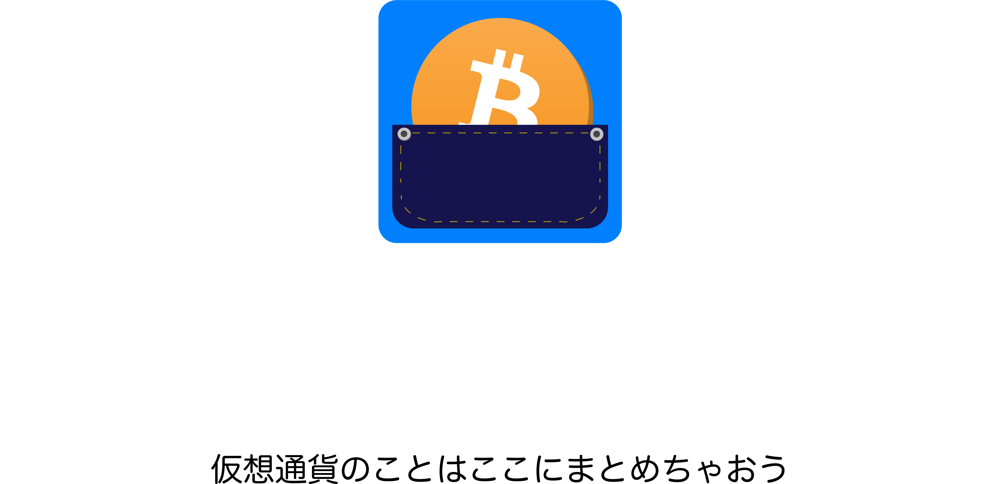

<!--
  Generated template for the NotLoggedHomePage page.

  See http://ionicframework.com/docs/components/#navigation for more info on
  Ionic pages and navigation.
-->
<ion-header>
    <ion-navbar hideBackButton>
        <ion-title>
            <div class="not-logged-in-home__header-image-wrapper">
                
            </div>
        </ion-title>
    </ion-navbar>
</ion-header>


<ion-content padding>
    <div class="not-logged-home__hero-icon-wrapper">
        
    </div>
    <ion-card>
        <ion-card-header>ログイン</ion-card-header>
        <ion-list>
            <ion-item>
                <ion-label color="primary" stacked>メールアドレス</ion-label>
                <ion-input type="email" placeholder="あなたのメールアドレス"></ion-input>
            </ion-item>
            <ion-item>
                <ion-label color="primary" stacked>パスワード</ion-label>
                <ion-input type="password" placeholder="あなたのパスワード"></ion-input>
            </ion-item>
            <ion-item>
                <button ion-button color="primary" item-right default>ログイン</button>
            </ion-item>
        </ion-list>
        <ion-item>
            <a (click)="goSignUpPage()">アカウントをお持ちでない方</a>
        </ion-item>
    </ion-card>
</ion-content>
